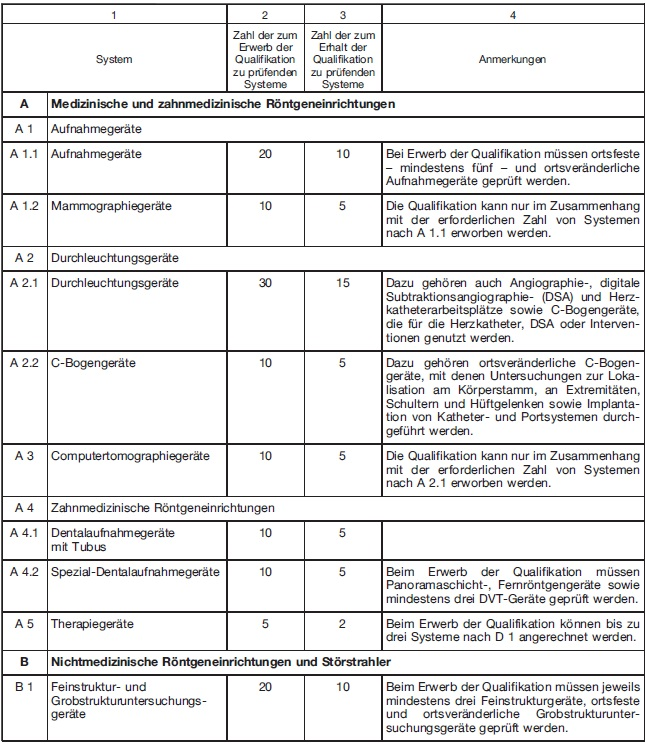
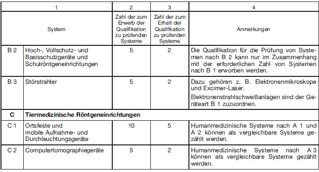
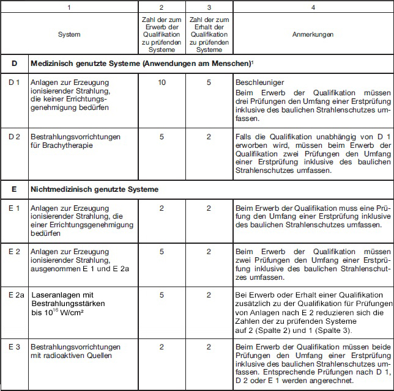
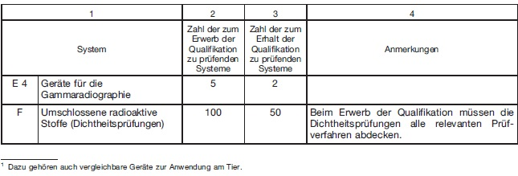

Teil 1: Sachverständige nach § 172 Absatz 1 Satz 1 Nummer 1, 3 und 4 StrlSchG
Für den Erwerb der erforderlichen fachlichen Qualifikation nach § 181 Absatz 1 Nummer 4 für Prüfungen nach § 172 Absatz 1 Satz 1 Nummer 1, 3 und 4 des Strahlenschutzgesetzes ist für Prüfungen an Systemen nach Spalte 1 der Tabellen 1 und 2 die Durchführung von Prüfungen nach Spalte 2 der Tabellen 1 und 2 unter Aufsicht einer Person nach § 181 Absatz 1 Nummer 3 erforderlich.
Tabelle 1
Prüfungen nach § 172 Absatz 1 Satz 1 Nummer 1 StrlSchG


Tabelle 2
Prüfungen nach § 172 Absatz 1 Satz 1 Nummern 3 und 4 StrlSchG
Die Prüfungen sind an unterschiedlichen Systemen oder in unterschiedlichen Einsatzbereichen durchzuführen.


Teil 2
Sachverständige nach § 172 Absatz 1 Satz 1 Nummer 2 StrlSchG
Für den Erwerb der erforderlichen fachlichen Qualifikation nach § 181 Absatz 1 Nummer 4 für Prüfungen nach § 172 Absatz 1 Satz 1 Nummer 2 des Strahlenschutzgesetzes sind fünf Prüfungen unter Aufsicht einer Person nach § 181 Absatz 1 Nummer 3 in zwei oder mehreren Tätigkeitsfeldern nach Anlage 3 des Strahlenschutzgesetzes durchzuführen.